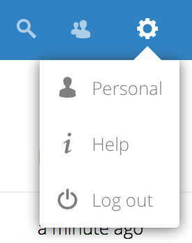

Come utente, puoi gestire le tue impostazioni personali.
Per accedere alle tue impostazioni personali:
Fai clic sulla tua foto di profilo in alto a destra dell’interfaccia Nextcloud.
Si apre il menu delle impostazioni personali:

Menu delle impostazioni personali
Scegli Impostazioni dal menu a tendina:
Nota
Se sei un amministratore, puoi anche gestire gli utenti ed amministrare il server. Questi link non compaiono agli utenti non-amministratori
Le opzioni elencate nella pagina Impostazioni personali dipende dalle applicazioni abilitate dall’amministratore. Alcune delle funzionalità che vedrai includono ciò che segue:
Utilizzo e quota disponibile
Gestisci la tua immagine di profilo
Nome completo (puoi impostarlo come preferisci, essendo separato dal tuo nome di accesso di Nextcloud, che è unico e non può essere cambiato)
Gestisci il tuo flusso delle attività e le notifiche
Cartella predefinita dove salvare i nuovi documenti
Il tuo ID di condivisione federata
Collegamento per la condivisione sule reti sociali
Versione di Nextcloud
Nota
Le opzioni disponibili e le impostazioni dipendono dalla configurazione dei tuoi amministratori. Se non sei in grado di cambiare password o il nome visualizzato nelle tue impostazioni personali, contatta il tuo amministratore per ricevere supporto.